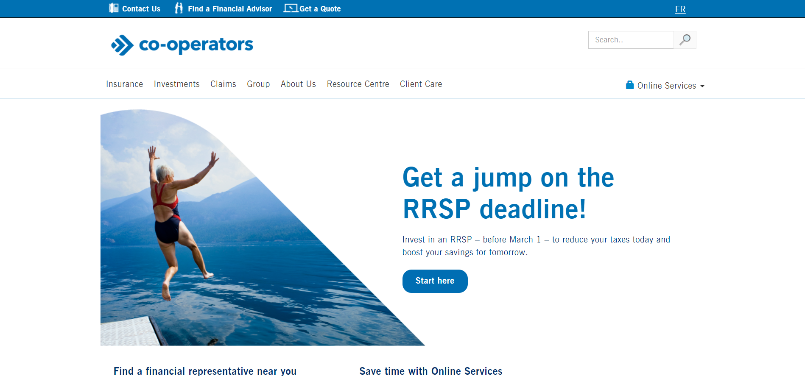
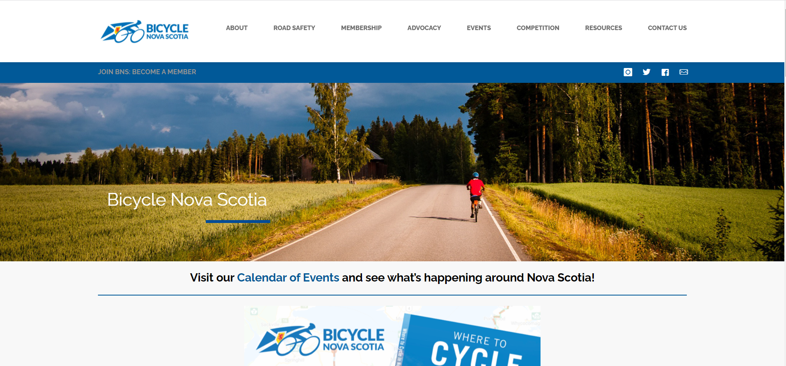

CAPCO (Front End Angular Developer)

Experience
- Built/tested mock APIs to meet performance requirements.
-
Tested applications (QA) to ensure usability and quality assurance
(Integration + E2E).
-
Created demo front end web application for CDIC Insurance, while
adhering to requirements.
-
Helped develop The Cooperators Insurance web application with team of
developers.
Bicycle Nova Scotia (Web Developer Internship)

Experience
- Built website content and designs using HTML/CSS.
-
Modified and updated website using WordPress to improve functionality and
user experience.
- Developed in PHP to create custom forms for company's website.
-
Utilized Swift and Google Maps API to build custom GPS phone application.